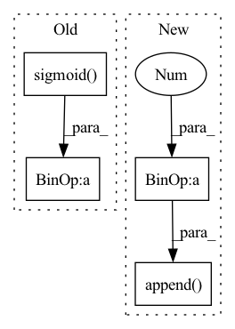

Pattern ID :731

Before Change
// diversity = torch.minimum(var, torch.ones_like(var))
// reg -= diversity
diversity = batchWiseLogit.std(1).mean(-1).sigmoid()
// summedProb = batchWiseLogit.sum(1)
// posterior = OneHotCategorical(logits=summedProb)
// prior = OneHotCategorical(probs=torch.ones_like(summedProb) / summedProb.shape[-1])
// reg = torch.distributions.kl_divergence(posterior, prior) / diversity
reg = compute_penalties(batchWiseLogit, allowed_entropy=0.1, individual_entropy_coeff=cv, allowed_js=4.0, js_coeff=cv, cv_coeff=cv, eps=Consts.Eps)
reg = reg / diversity
regs.append(reg)
regs = sum(regs)
return ssimLoss, l1Loss + l2Loss, l1QLoss + l2QLoss, regs // + 10 * stdReg
After Change
for latent, q in zip(latents, quantizeds):
l2QLoss.append(F.mse_loss(latent.detach(), q, reduction="none").mean(axis=(1, 2, 3)))
l1QLoss.append(F.l1_loss(latent.detach(), q, reduction="none").mean(axis=(1, 2, 3)))
l2QLoss.append(0.00001 * F.mse_loss(latent, q.detach(), reduction="none").mean(axis=(1, 2, 3)))
l1QLoss.append(0.00001 * F.l1_loss(latent, q.detach(), reduction="none").mean(axis=(1, 2, 3)))
l1QLoss = sum(l1QLoss)
l2QLoss = sum(l2QLoss)
In pattern: SUPERPATTERN
Frequency: 3
Non-data size: 4
Instances
Fragment ID: 2427265
Project Name: xiaosu-zhu/mcquic
Commit Name: fea4d517415acb825c6282b84ea39c0989abf5fc
Time: 2021-03-23
Author: xiaosu.zhu@outlook.com
File Name: src/mcqc/losses/structural.py
M Class Name: CompressionLossTwoStage
N Class Name: CompressionLossTwoStage
M Method Name: forward(8)
N Method Name: forward(8)
M Parent Class: nn.Module
N Parent Class: nn.Module
M File Name: src/mcqc/losses/structural.py
N File Name: src/mcqc/losses/structural.py
M Start Line: 69
M End Line: 91
N Start Line: 53
N End Line: 60
'>
Before Change
:return:
items_embedding = self.item_embedding(torch.tensor([i for i in range(self.items_total)]).to(nodes_output.device))
alpha = torch.sigmoid(self.alpha)
embed = (1 - alpha) * items_embedding.clone() + alpha * nodes_output
return embed
After Change
num_nodes = self.items_total
items_embedding = self.item_embedding(torch.tensor([i for i in range(self.items_total)]).to(nodes_output.device))
batch_embedding = []
for _ in range(batch_size):
output_node_features = nodes_output[id:id + num_nodes, :]
embed = (1 - self.alpha) * items_embedding
embed = embed + self.alpha * output_node_features
batch_embedding.append(embed)
id += num_nodes
batch_embedding = torch.stack(batch_embedding)
return batch_embedding
'>
Fragment ID: 2427264
Project Name: benedekrozemberczki/pytorch_geometric_temporal
Commit Name: 6c36f8a6c545046914ce31c842b9648ac37c8b93
Time: 2021-07-24
Author: benedek.rozemberczki@gmail.com
File Name: torch_geometric_temporal/nn/attention/dnntsp.py
M Class Name: GlobalGatedUpdater
N Class Name: GlobalGatedUpdater
M Method Name: forward(2)
N Method Name: forward(2)
M Parent Class: nn.Module
N Parent Class: nn.Module
M File Name: torch_geometric_temporal/nn/attention/dnntsp.py
N File Name: torch_geometric_temporal/nn/attention/dnntsp.py
M Start Line: 84
M End Line: 87
N Start Line: 88
N End Line: 101
'>
Before Change
batchWiseLogit = logit.reshape(len(logit), -1, logit.shape[-1])
// [n, k]
summedProb = batchWiseLogit.mean(1).sigmoid()
target = torch.ones_like(summedProb) / 2.0
// [n, ]
reg = F.binary_cross_entropy(summedProb, target, reduction="none").sum(-1)
After Change
l2QLoss = list()
l1QLoss = list()
if not e2e:
for latent, q in zip(latents, quantizeds):
l2QLoss.append(F.mse_loss(latent.detach(), q, reduction="none").mean(axis=(1, 2, 3)))
l1QLoss.append(F.l1_loss(latent.detach(), q, reduction="none").mean(axis=(1, 2, 3)))
l2QLoss.append(0.1 * F.mse_loss(latent, q.detach(), reduction="none").mean(axis=(1, 2, 3)))
l1QLoss.append(0.1 * F.l1_loss(latent, q.detach(), reduction="none").mean(axis=(1, 2, 3)))
l1QLoss = sum(l1QLoss)
l2QLoss = sum(l2QLoss)
'>
Fragment ID: 2427263
Project Name: xiaosu-zhu/mcquic
Commit Name: a70c627dfb797c38494d697f152f70f80bea53e3
Time: 2021-03-21
Author: xiaosu.zhu@outlook.com
File Name: src/mcqc/losses/structural.py
M Class Name: CompressionLossTwoStage
N Class Name: CompressionLossTwoStage
M Method Name: forward(8)
N Method Name: forward(8)
M Parent Class: nn.Module
N Parent Class: nn.Module
M File Name: src/mcqc/losses/structural.py
N File Name: src/mcqc/losses/structural.py
M Start Line: 49
M End Line: 86
N Start Line: 49
N End Line: 93
'>
Before Change
// diversity = torch.minimum(var, torch.ones_like(var))
// reg -= diversity
diversity = batchWiseLogit.std(1).mean(-1).sigmoid()
// summedProb = batchWiseLogit.sum(1)
// posterior = OneHotCategorical(logits=summedProb)
// prior = OneHotCategorical(probs=torch.ones_like(summedProb) / summedProb.shape[-1])
// reg = torch.distributions.kl_divergence(posterior, prior) / diversity
reg = compute_penalties(batchWiseLogit, allowed_entropy=0.1, individual_entropy_coeff=cv, allowed_js=4.0, js_coeff=cv, cv_coeff=cv, eps=Consts.Eps)
reg = reg / diversity
regs.append(reg)
regs = sum(regs)
return ssimLoss, l1Loss + l2Loss, l1QLoss + l2QLoss, regs // + 10 * stdReg
After Change
l2QLoss = list()
l1QLoss = list()
if not e2e:
for latent, q in zip(latents, quantizeds):
l2QLoss.append(F.mse_loss(latent.detach(), q, reduction="none").mean(axis=(1, 2, 3)))
l1QLoss.append(F.l1_loss(latent.detach(), q, reduction="none").mean(axis=(1, 2, 3)))
l2QLoss.append(0.00001 * F.mse_loss(latent, q.detach(), reduction="none").mean(axis=(1, 2, 3)))
l1QLoss.append(0.00001 * F.l1_loss(latent, q.detach(), reduction="none").mean(axis=(1, 2, 3)))
l1QLoss = sum(l1QLoss)
l2QLoss = sum(l2QLoss)
'>
Fragment ID: 2427257
Project Name: xiaosu-zhu/mcquic
Commit Name: fea4d517415acb825c6282b84ea39c0989abf5fc
Time: 2021-03-23
Author: xiaosu.zhu@outlook.com
File Name: src/mcqc/losses/structural.py
M Class Name: CompressionLossTwoStage
N Class Name: CompressionLossTwoStage
M Method Name: forward(8)
N Method Name: forward(8)
M Parent Class: nn.Module
N Parent Class: nn.Module
M File Name: src/mcqc/losses/structural.py
N File Name: src/mcqc/losses/structural.py
M Start Line: 69
M End Line: 91
N Start Line: 53
N End Line: 60